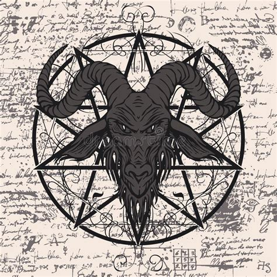

The cabeça Satânica (Satanic head), also known as the cabeça errante (wandering head), is a disembodied demon head that bounces or rolls along the ground, grinning a grin of evil incarnate. If you don’t go insane from the sight alone, you will after the cabeça hops up and gives you a playful little bump – which, according to legend, is all it takes to render you swiftly sick and then dead.
Most often, the cabeça shows up as a long-haired stranger in the woods at night, his back to the victim. That’s not nearly creepy enough, though, so the stranger’s body then drops straight down into the ground (and/or hell), probably a lot like the stomach of the unfortunate witness. It stops dropping at the neck, and only a shaggy cabeça remains to be seen. Smiling like a lunatic, the head turns to face its prey. There are minor variations of this legend, one of which describes the cabeça as a kind of horror-bomb lobbed by some other evil being, who throws it at any person in range to torment them for kicks and giggles. Either way – no thanks, legend, no thanks.